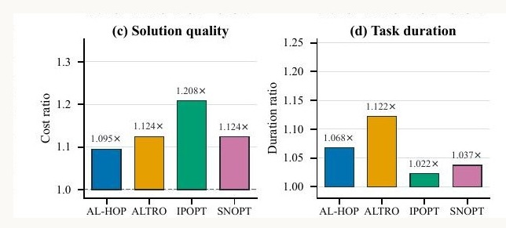

Started the MSR program at Penn 入学宾夕法尼亚大学 MSR 项目
August 20262026 年 8 月Master of Science in Robotics, Philadelphia. 机器人学硕士，费城。
MSR · University of Pennsylvania 宾夕法尼亚大学 机器人硕士在读
I am a Master of Science in Robotics student at the University of Pennsylvania, interested in the space where optimal control meets robot learning. Much of my work so far is in trajectory optimization, on a question standard planners skip: how long should a motion take? Conventional solvers fix the duration up front and re-solve for every guess. My work makes that choice part of the solve itself.
I also deploy vision-language-action models on real hardware, which is a useful corrective. The distance between a clean theoretical result and an arm that actually picks up the right object is where most of the interesting problems turn out to live.
My current project asks whether measured touch can teach a visual representation what vision alone does not: the model trains against real pressure and force signals, then deploys with nothing but RGB.
我目前在宾夕法尼亚大学攻读机器人学硕士（MSR），研究兴趣在最优控制与机器人学习的交界处。我目前的多数工作在轨迹优化上，关注的是大多数规划器会跳过的一个问题：一段运动究竟应该持续多久？传统求解器把时长当作提前给定的参数，每换一个猜测就要重解一次。我的工作把这个选择本身变成求解的一部分。
我也在真实硬件上部署视觉-语言-动作模型。这件事很能治人：从一个干净的理论结果，到一条真的能把正确物体抓起来的机械臂，中间的距离才是大部分有意思的问题所在。
我目前的项目在问：实测的触觉能不能教会视觉表征一些仅靠视觉学不到的东西——训练时以真实的压力与力信号为监督，部署时只看 RGB。

Gave the talk as an undergraduate first author. 以本科生第一作者身份完成大会报告。
Master of Science in Robotics, Philadelphia. 机器人学硕士，费城。
A voice-interactive closed-loop VLA system. I led a team of five. 语音交互式闭环 VLA 系统，任五人小组组长。
A preregistered controlled study of what measured touch can teach visual representations. Inference stays RGB-only. 预注册的受控研究：实测触觉监督能教给视觉表征什么。推理只看 RGB。
RSS 2026 · Robotics: Science and Systems
Undergraduate first author · presented the talk 本科生第一作者 · 本人作大会报告

In submission · ICRA 2027投稿中 · ICRA 2027
First author 第一作者


Ongoing research · 2026 — 进行中的研究 · 2026 —
Lead author 主要负责人
B.E. Thesis · Shanghai Jiao Tong University · 2026 本科毕业设计 · 上海交通大学 · 2026
Project lead · team of 5 项目负责人 · 五人团队
Tape into the drawer胶带放进抽屉
Pen into the holder笔插进笔筒
Block into the box方块放进盒子